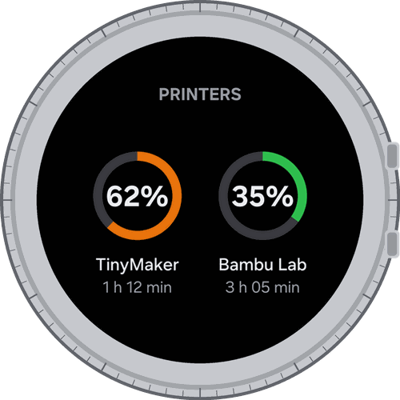
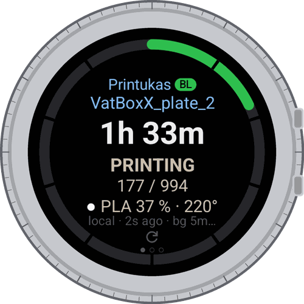
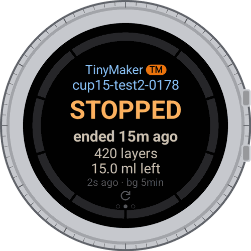

TinyStatusby TinyOwl
3D printers on your wrist.
See how the print is going without walking to the printer or opening your phone.



Progress and time left
For TinyMaker resin printers and Bambu Lab printers.
Alerts
When a print finishes, pauses or stops with an error.
Tile and watch face
A tile with up to two printers, and complications for progress, time left and a progress ring.
Background watch
Keeps checking while a print is running, then stops by itself to save battery.
Free, no ads, no tracking. Coming to Google Play.